Wat is project discan?

Project integrates Canvas LMS to Discord. Canvas is a learning management system that helps teachers and students. This Group thought that it was a hassle to always have to go to Canvas. Considering we use discord daily we thought this was a good idea.
Costs and needs
For this project we needed a data base and a Canvas instance for testing. we store relavent data this include tokens that have to be encrypted incase of data breaches
Features
Help
Shows a list of all the commands you can do

Reminders
How to use the reminder command.

Notes
This command makes it possible to set notes about anything in any channel.

course channels
The bot creates channels automatically. this is highly customizable. Admins can change permissions and names of these channels to give them your own spin.
announcements
makes it possible to set notes about anything in any channel

block diagram
A user sends a command in the server where the bot is listening. it finds a command and does what it has to. if it needs access to any stored info. it will send a request to the API. the API will handle this request and get the appropriat data. This data will then be sent back to the bot and used as it has to. There are also processes like channel creation that happen every so often. This will do all the requests for data and handelings to present the data to the bot. The bot will then send the data to the right discord server(s)
Who?
This project was made by 3 students from Thomas more: Campus de nayer. Peter Lecont, Hannah Witvrouwen and Joachim Jacobs (me). We are enrolled as professional bachelor electronics-ict. We made this project because this would make our and our fellow students life easier. It also intrested us to work with these technologies. We had an idea and made it reality. for more information about me check the about page